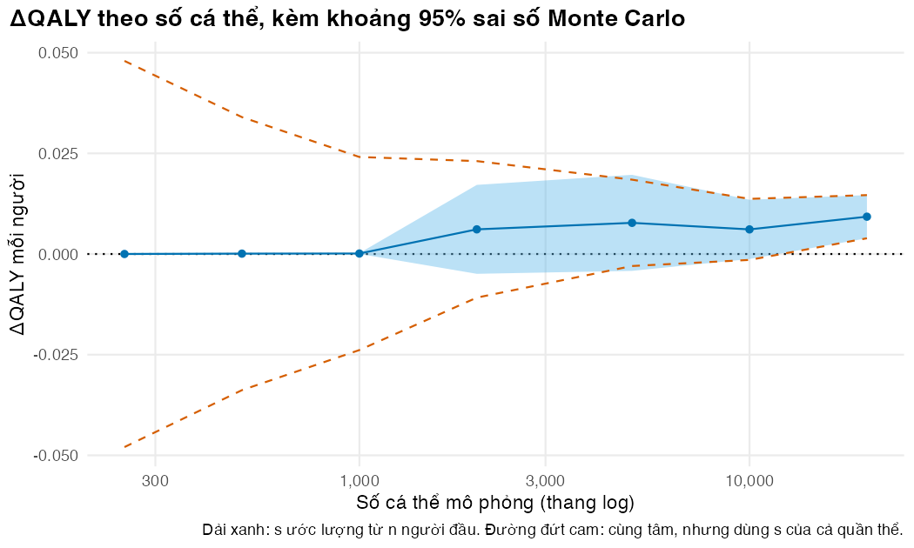
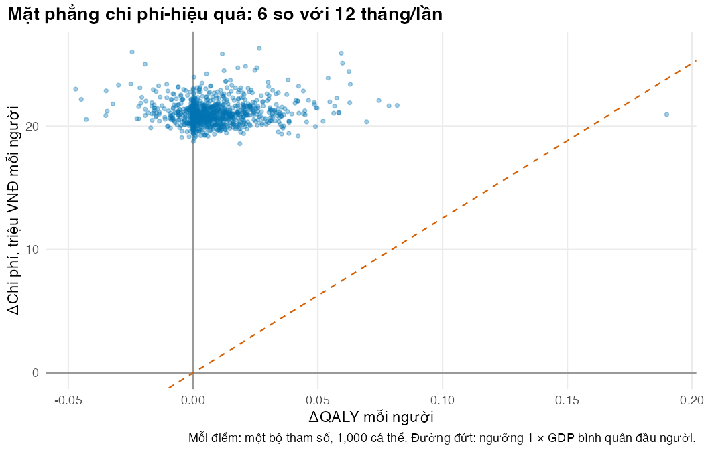
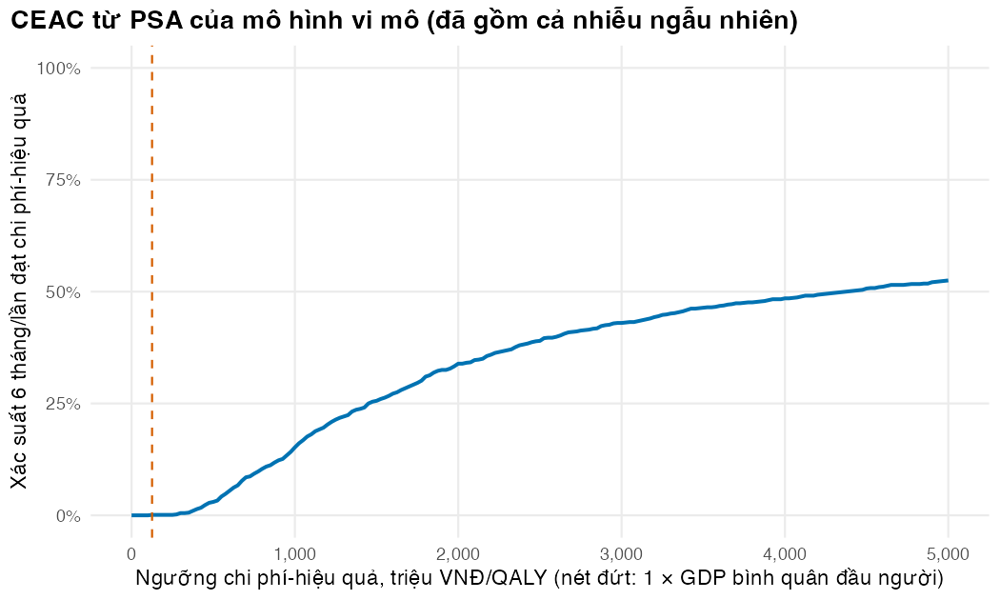

Bài 5: Bao nhiêu cá thể là đủ? Sai số Monte Carlo, PSA và báo cáo
Chọn số cá thể theo câu hỏi quyết định, chạy PSA lồng hai vòng và tách nhiễu khỏi bất định tham số
Vì sao bạn nên quan tâm?
Bạn trình bày kết quả mô hình trước một hội đồng chuyên môn: xét nghiệm tải lượng 6 tháng/lần thêm bao nhiêu sức khỏe so với 12 tháng/lần? Nếu mỗi QALY được định giá theo mốc thường dùng trong các nghiên cứu ở Việt Nam, 1 × GDP bình quân đầu người, thì đó là 125,500,000 VNĐ, bằng 24 tháng lương tối thiểu vùng I (Cục Thống kê (Bộ Tài chính) 2026; Chính phủ 2025). Một sai số mô phỏng chỉ 0.001 QALY mỗi người (chưa đến nửa ngày sống khỏe mạnh), nhân lên 184,214 người đang điều trị ARV (Báo Lào Cai 2025), tương đương khoảng 23 tỷ VNĐ. Trong mô hình này lợi ích sức khỏe nhỏ và chỉ đến với ít người, nên sai số Monte Carlo dễ lớn hơn chính lợi ích. Bài này giúp bạn quyết định cần mô phỏng bao nhiêu người trước khi nói với hội đồng rằng kết quả đã đủ chắc.
Mục tiêu học tập
Sau bài này, bạn có thể:
Tính sai số Monte Carlo (Monte Carlo error) của một kết quả gia tăng và chọn số cá thể theo câu hỏi quyết định, kể cả theo xác suất (power) để khoảng sai số loại trừ được 0.
Định lượng mức giảm phương sai nhờ dùng chung số ngẫu nhiên giữa các chiến lược, và tách phần do ghép chung quần thể khỏi phần do dùng chung số ngẫu nhiên.
Chạy phân tích độ nhạy xác suất (PSA) cho mô phỏng vi mô bằng hai vòng lặp lồng nhau và ước lượng chi phí tính toán.
Tách phương sai của kết quả PSA thành phần do tham số và phần do nhiễu ngẫu nhiên, rồi chọn số cá thể cho vòng trong.
Liệt kê những gì một báo cáo mô phỏng vi mô phải có, theo CHEERS 2022.
Ý chính
Kết quả trung bình trên \(N\) người có sai số Monte Carlo \(s/\sqrt{N}\); muốn giảm sai số một nửa phải tăng \(N\) gấp bốn. Với kết quả gia tăng, \(s\) là độ lệch chuẩn của chênh lệch theo cặp giữa hai chiến lược, và dùng chung số ngẫu nhiên làm \(s\) nhỏ đi rất nhiều.
Mỗi loại chênh lệch cần một \(N\) riêng. Chênh lệch chi phí do xét nghiệm rõ dấu với vài chục người; lợi ích sức khỏe, chỉ đến với số ít người, có thể cần hàng nghìn đến hàng chục nghìn người.
Khi đa số cá thể có cùng lịch sử ở hai chiến lược, \(s\) ước lượng từ ít người gần như bằng 0 và khoảng tin cậy hẹp giả tạo. Đừng tin sai số Monte Carlo tính từ vài trăm người.
“Đủ để biết dấu” nghĩa là khoảng 95% loại trừ 0 với xác suất đủ cao. Cỡ mẫu mà nửa độ rộng kỳ vọng bằng đúng \(|\Delta|\) chỉ cho khoảng loại trừ 0 khoảng một nửa số lần. Muốn power \(1 - \beta\) cần \(N = ((z_{1-\alpha/2} + z_{1-\beta}) s / |\Delta|)^2\).
PSA cho mô phỏng vi mô có hai vòng: vòng ngoài rút bộ tham số, vòng trong mô phỏng \(N\) người. Phương sai của kết quả PSA = phương sai do tham số + phương sai trong vòng / \(N\), và ANOVA tách được hai phần.
Nhiễu ngẫu nhiên làm đám mây PSA rộng hơn thật, có thể làm méo đường cong chấp nhận chi phí-hiệu quả (CEAC) và thổi phồng giá trị kỳ vọng của thông tin hoàn hảo (EVPI).
Báo cáo phải nêu: số cá thể, seed, sai số Monte Carlo, việc dùng chung số ngẫu nhiên, số vòng ngoài và trong, thời gian chạy, phiên bản phần mềm và nơi lấy mã.
Nội dung
Sai số Monte Carlo của một kết quả gia tăng
Gọi \(\Delta_i\) là chênh lệch một kết cục của người \(i\) giữa chiến lược 6 tháng/lần và 12 tháng/lần, khi cùng người đó đi qua cả hai chiến lược với cùng số ngẫu nhiên. Kết cục có thể là chi phí, năm sống điều chỉnh theo chất lượng (QALY) hay lợi ích ròng quy ra tiền (net monetary benefit, NMB). Ở Bài 3, chênh lệch NMB bị tiền xét nghiệm chi phối và đã rõ dấu; câu hỏi khó là lợi ích sức khỏe, nên bài này lấy \(\Delta_i\) là chênh lệch QALY. Ước lượng \(\bar\Delta = \frac{1}{N}\sum_i \Delta_i\) có sai số chuẩn \(\text{SE} = s_\Delta / \sqrt{N}\) và nửa độ rộng khoảng 95% bằng \(1.96\, s_\Delta/\sqrt{N}\). Có hai câu hỏi về \(N\).
Biết dấu của chênh lệch. Giả sử chênh lệch thật là \(\Delta\). Khoảng 95% loại trừ 0 khi \(|\bar\Delta| > 1.96\, \text{SE}\). Nếu chọn \(N_{\text{dấu}} = (1.96\, s_\Delta / |\Delta|)^2\) thì nửa độ rộng kỳ vọng bằng đúng \(|\Delta|\), còn \(\bar\Delta\) dao động quanh \(\Delta\) với độ lệch chuẩn bằng SE, nên nó vượt \(1.96\, \text{SE}\) chỉ khoảng một nửa số lần: \(N_{\text{dấu}}\)không bảo đảm biết dấu. Muốn khoảng loại trừ 0 với xác suất \(1 - \beta\), cần
Đạt độ chính xác mong muốn. Để nửa độ rộng không quá \(h\): \(N_h = (1.96\, s_\Delta / h)^2\). Cả hai quy tắc đều cần \(s_\Delta\) và \(\Delta\) từ một lượt chạy thử, nên chúng là ước lượng, không phải bảo đảm.
Dùng chung số ngẫu nhiên giảm phương sai thế nào
Với hai biến ngẫu nhiên \(X\) và \(Y\), \(\text{Var}(X - Y) = \text{Var}(X) + \text{Var}(Y) - 2\,\text{Cov}(X, Y)\). Khi cùng một người với cùng số ngẫu nhiên (common random numbers) đi qua hai chiến lược, kết cục của họ ở hai chiến lược tương quan rất mạnh. Số hạng hiệp phương sai trừ đi gần hết hai số hạng phương sai (Stout và Goldie 2008). Người chết sớm vì tử vong nền ở chiến lược này cũng chết sớm ở chiến lược kia; chỉ những gì chiến lược thực sự thay đổi mới tạo ra chênh lệch. “Cùng một người” gồm hai phần có thể tách: cùng quần thể (cùng tuổi, cùng tuân thủ) và cùng số ngẫu nhiên (cùng may rủi). Ta sẽ đo riêng từng phần.
PSA lồng hai vòng
Ở mô hình đoàn hệ, mỗi bộ tham số cho ngay giá trị kỳ vọng. Ở mô phỏng vi mô, mỗi bộ tham số \(\theta_k\) phải đi kèm một quần thể \(N\) người, và kết quả của vòng trong là \(\bar\Delta_k = \Delta(\theta_k) + \varepsilon_k\), với \(\text{Var}(\varepsilon_k) = \sigma^2_{\text{trong}}/N\)(Groot Koerkamp và c.s. 2010). Vì vậy
\[
\text{Var}(\bar\Delta_k) = \underbrace{\text{Var}[\Delta(\theta)]}_{\text{bất định tham số}} + \underbrace{\sigma^2_{\text{trong}} / N}_{\text{nhiễu ngẫu nhiên}} .
\]
Ước lượng \(\sigma^2_{\text{trong}}\) bằng trung bình phương sai giữa các cá thể trong mỗi vòng trong, rồi trừ ra để có phần do tham số. Đây là ý tưởng phân tích phương sai mà O’Hagan, Stevenson, và Madan (2007) phát triển cho mô hình cấp cá thể. Các tác giả cũng đưa ra công thức chọn số vòng ngoài và số người mỗi vòng sao cho tổng thời gian chạy nhỏ nhất. Hệ quả thực hành: không cần \(N\) lớn như phân tích cơ sở cho từng bộ tham số, miễn là phần nhiễu được ước lượng và báo cáo.
Nếu không tách nhiễu, đám mây PSA rộng hơn bất định thật: CEAC có thể bị kéo về phía 50% vì nhiễu làm dấu của ΔNMB đổi ngẫu nhiên, và EVPI bị thổi phồng vì nhiễu bị đọc nhầm thành giá trị của thông tin.
Báo cáo
CHEERS 2022 là danh mục 28 mục cho mọi đánh giá kinh tế (Husereau và c.s. 2022). iDSI Reference Case cho các nước thu nhập thấp và trung bình nêu 11 nguyên tắc, mỗi nguyên tắc kèm chuẩn báo cáo (Wilkinson và c.s. 2016). Với mô phỏng vi mô, cần thêm những thông tin đặc thù để người đọc đánh giá được mức biến thiên của kết quả và độ minh bạch của mô hình (Rutter, Zaslavsky, và Feuer 2011). Bảng cuối phần thực hành là một mẫu tối thiểu.
Thực hành
Phần đầu chọn bộ máy mô phỏng. Nếu biên dịch được C++ thì dùng Rcpp (Bài 4), nếu không thì dùng bộ máy R vectơ hóa với ít bộ tham số PSA hơn để thời gian chạy vẫn hợp lý. Hai bộ máy cho cùng kết quả với cùng seed, nên bài này chạy được ở mọi máy; thời gian chạy và số bộ tham số PSA có thể khác.
if (!isTRUE(l10n_info()[["UTF-8"]])) invisible(Sys.setlocale("LC_CTYPE", "en_US.UTF-8"))source("../_shared/R/helpers.R")source("../_shared/R/vn_data.R") # course-wide values: prices, threshold, life tablesource("code/model.R")library(ggplot2)p <-load_hiv_params() # params/hiv.csv + the shared Vietnamese inputs# Use the C++ engine when a compiler is available; otherwise the (slower) R engine.# Both give identical results for the same seeds (Lesson 4).engine <-tryCatch({ compile_microsim_cpp(); run_microsim_cpp },error =function(e) { message("No C++ toolchain: using run_microsim()"); run_microsim })has_cpp <-identical(engine, run_microsim_cpp)engine_name <-if (has_cpp) "Rcpp"else"R (vectơ hóa)"N_MAX <- BASE_N # largest population: the base case of Lesson 3K_PSA <-if (has_cpp) 1000else100# outer loop: parameter draws (fewer with the slower R engine)N_INNER <-1000# inner loop: people per parameter drawN_REPS_SE <-if (has_cpp) 40else20# replications for the standard-error checkN_REP_PEOPLE <-2000# people per replication in that checkREL_TARGET <-0.25# target half-width of the interval: 25% of the QALY gainB_RESAMPLE <-2000# resamples per sample size in the power checkWTP_MAX <-5000e6# upper end of the CEAC threshold grid, VND/QALYc(engine = engine_name, K_PSA = K_PSA, N_INNER = N_INNER)
engine K_PSA N_INNER
"Rcpp" "1000" "1000"
Bài này chạy bằng bộ máy Rcpp với 1,000 bộ tham số PSA. Đầu tiên ta mô phỏng 20,000 người cho cả hai chiến lược, dùng chung số ngẫu nhiên, đúng quần thể và seed của phân tích cơ sở ở Bài 3, rồi xem ước lượng chênh lệch QALY (và NMB, để so) thay đổi thế nào khi chỉ dùng \(n\) người đầu tiên.
pop_max <-make_population(p, N_MAX, seed = BASE_POP_SEED)crn <-run_strategies(p, pop_max, seed = BASE_SIM_SEED, engine = engine)# Paired differences per person, vl6 - vl12: health (QALY) and net monetary benefit (VND)d_qaly_i <- crn$sims$vl6$indiv$qaly - crn$sims$vl12$indiv$qalyd_nmb_i <- d_qaly_i * p$wtp - (crn$sims$vl6$indiv$cost - crn$sims$vl12$indiv$cost)ns <-c(250, 500, 1000, 2000, 5000, 10000, 20000)mc_tab <-data.frame(n = ns, d_qaly =NA, se =NA, d_nmb_million =NA, se_nmb_million =NA)for (j inseq_along(ns)) { x <- d_qaly_i[seq_len(ns[j])] # the first n simulated people y <- d_nmb_i[seq_len(ns[j])] mc_tab$d_qaly[j] <-mean(x) mc_tab$se[j] <-sd(x) /sqrt(ns[j]) mc_tab$d_nmb_million[j] <-mean(y) /1e6 mc_tab$se_nmb_million[j] <-sd(y) /sqrt(ns[j]) /1e6}mc_tab$lo <- mc_tab$d_qaly -1.96* mc_tab$semc_tab$hi <- mc_tab$d_qaly +1.96* mc_tab$sesd_person <-sd(d_qaly_i) # s of the individual QALY differences, all N_MAX peoplemc_tab$se_theory <- sd_person /sqrt(mc_tab$n) # what s / sqrt(n) gives if s were knownmc_show <- mc_tabmc_show[, c("d_qaly", "se", "lo", "hi", "se_theory")] <-round(mc_show[, c("d_qaly", "se", "lo", "hi", "se_theory")], 4)mc_show[, c("d_nmb_million", "se_nmb_million")] <-round(mc_show[, c("d_nmb_million", "se_nmb_million")], 2)mc_show
# Individual differences are skewed with a long tail: the largest one is many SDs from the meantail_ratio <-max(abs(d_qaly_i -mean(d_qaly_i))) / sd_personshare_zero <-mean(d_qaly_i ==0) # people whose life history is the same in both strategiesround(c(tail_ratio = tail_ratio, share_identical = share_zero), 3)
tail_ratio share_identical
50.538 0.924
nmb_hi_250 <- mc_tab$d_nmb_million[1] +1.96* mc_tab$se_nmb_million[1]stopifnot(mc_tab$lo[nrow(mc_tab)] >0, # text: with N_MAX the 95% interval of the QALY gain excludes 0 mc_tab$lo[1] <0, mc_tab$hi[1] >0, # text: with 250 people it does not nmb_hi_250 <0, # text: but the NMB difference is clearly negative at 250 share_zero >0.5, # text: most people have identical histories mc_tab$se[1] <0.5* mc_tab$se_theory[1]) # text: s is underestimated with few people
Hai cột cho hai câu chuyện. Chênh lệch NMB đã rõ dấu từ 250 người (cận trên của khoảng 95% là -19.3 triệu VNĐ), vì nó chủ yếu là tiền xét nghiệm mà ai cũng trả. Chênh lệch QALY thì khác. 92.4% số người có cùng lịch sử sống ở hai chiến lược, nên chênh lệch của họ bằng đúng 0; lợi ích dồn vào số ít người còn lại, và giá trị xa trung bình nhất cách 51 độ lệch chuẩn. Với vài trăm người đầu, hầu như chưa ai thuộc nhóm thiểu số đó, nên \(s\) ước lượng gần bằng 0: có lúc sai số chuẩn ước lượng chỉ bằng 0.4% đường lý thuyết (cột se_theory, dùng \(s\) của cả 20,000 người). Khoảng tin cậy khi đó hẹp giả tạo và ở 1,000 người thậm chí nằm hẳn trên 0, một kết luận đến quá sớm. Chỉ ở 20,000 người, khoảng 0.0039 đến 0.0146 QALY mới vừa đủ tin cậy và loại trừ 0. Đây cũng là lý do ước lượng ΔQALY từ vài trăm người ở Bài 2 không đáng tin, dù sai số tính ra trông có vẻ nhỏ.
Hình vẽ \(\bar\Delta\) (ΔQALY) và khoảng 95% khi tăng \(n\). Dải xanh dùng \(s\) ước từ \(n\) người đầu; hai đường đứt cam có cùng tâm nhưng dùng \(s\) của cả quần thể (đường \(1/\sqrt{n}\) lý thuyết). Chúng trùng nhau ở \(n\) lớn nhất; ở \(n\) nhỏ, dải xanh mỏng hơn hẳn vì \(s\) bị ước lượng thấp. Chú ý thang log của trục hoành.
fig_mc <-ggplot(mc_tab, aes(n, d_qaly)) +geom_hline(yintercept =0, linetype ="dotted") +geom_ribbon(aes(ymin = lo, ymax = hi), fill = pal_course[5], alpha =0.4) +geom_line(aes(y = d_qaly +1.96* se_theory), linetype ="dashed", colour = pal_course[2]) +geom_line(aes(y = d_qaly -1.96* se_theory), linetype ="dashed", colour = pal_course[2]) +geom_line(colour = pal_course[1]) +geom_point(colour = pal_course[1]) +scale_x_log10(labels =function(x) fmt_num(x)) +labs(x ="Số cá thể mô phỏng (thang log)", y ="ΔQALY mỗi người",title ="ΔQALY theo số cá thể, kèm khoảng 95% sai số Monte Carlo",caption ="Dải xanh: s ước lượng từ n người đầu. Đường đứt cam: cùng tâm, nhưng dùng s của cả quần thể.") +theme_course()save_fig(fig_mc, "l05-mc-error.png", width =7, height =4.2)

Ước lượng ΔQALY và khoảng 95% sai số Monte Carlo theo số cá thể (dải xanh); đường đứt cam là khoảng lý thuyết với s của cả quần thể.
Không dùng chung số ngẫu nhiên thì sao? Ta so ba cách chạy chiến lược 6 tháng/lần với cùng chiến lược tham chiếu: (1) cùng quần thể và cùng số ngẫu nhiên (cách đã dùng); (2) cùng quần thể nhưng số ngẫu nhiên khác; (3) quần thể khác và số ngẫu nhiên khác. Cách (2) sai số tính theo chênh lệch ghép cặp từng người, vì hai chiến lược chia sẻ cùng tuân thủ và tuổi; cách (3) hai mẫu độc lập.
# Three ways to run the new strategy against the same reference strategy (vl12):# (1) common random numbers: same people AND same random numbers (the design used so far)# (2) same people, different random numbers: only the population is matched# (3) a different population and different random numbers: nothing is matchedqaly12 <- crn$sims$vl12$indiv$qalysim6_samepop <-engine(p, pop_max, "vl6", seed =602)sim6_indep <-engine(p, make_population(p, N_MAX, seed =601), "vl6", seed =602)se_crn <-sd(d_qaly_i) /sqrt(N_MAX) # paired differencesse_pop <-sd(sim6_samepop$indiv$qaly - qaly12) /sqrt(N_MAX) # paired by person, shared populationse_ind <-sqrt(var(qaly12) / N_MAX +var(sim6_indep$indiv$qaly) / N_MAX) # two independent samplescrn_gain <- (se_pop / se_crn)^2# extra people needed because random numbers are not sharedpop_gain <- (se_ind / se_pop)^2# extra people needed because the population is not sharedtotal_gain <- (se_ind / se_crn)^2# both togetherround(c(se_crn = se_crn, se_same_pop = se_pop, se_independent = se_ind), 4)
stopifnot(se_crn < se_pop, se_pop < se_ind, crn_gain > pop_gain) # text: most of the gain comes from shared random numbers
Sai số chuẩn của ΔQALY là 0.0027 với cách (1), 0.0490 với cách (2) và 0.0511 với cách (3). Để đạt cùng độ chính xác như cách (1), cách (2) cần nhiều hơn khoảng 321 lần số người, cách (3) nhiều hơn khoảng 349 lần. Riêng việc ghép chung quần thể chỉ giúp 1.1 lần; gần như toàn bộ lợi ích đến từ dùng chung số ngẫu nhiên. Lý do: khi số ngẫu nhiên giống nhau, 92% số người có lịch sử y hệt ở hai chiến lược và đóng góp đúng 0 vào chênh lệch; khi số ngẫu nhiên khác nhau, may rủi tử vong và bật lại của từng người lấn át tác dụng nhỏ của lịch xét nghiệm. Đây là cách giảm phương sai rẻ nhất trong mô phỏng vi mô.
Công thức \(s/\sqrt{N}\) có đúng không? Ta kiểm tra bằng nhiều lượt lặp độc lập, mỗi lượt 2,000 người, với hai khối seed tách rời (Bài 4). Độ lệch chuẩn của các ước lượng giữa các lượt phải gần sai số chuẩn tính bằng công thức.
# Check the standard-error formula: independent replications of N_REP_PEOPLE people. Seeds come from# two separate blocks (3001, 3002, ... for populations; 4001, 4002, ... for events).reps <- N_REPS_SEstopifnot(!anyDuplicated(c(3000+seq_len(reps), 4000+seq_len(reps))))rep_qaly <-numeric(reps); rep_se <-numeric(reps)for (r inseq_len(reps)) { pop_r <-make_population(p, N_REP_PEOPLE, seed =3000+ r) run_r <-run_strategies(p, pop_r, seed =4000+ r, engine = engine) d_r <-paired_diff(run_r$sims, wtp = p$wtp) rep_qaly[r] <- d_r$d_qaly rep_se[r] <- d_r$se_qaly}se_check <-c(sd_between_reps =sd(rep_qaly), mean_formula_se =mean(rep_se))round(se_check, 4)
Độ lệch chuẩn của ΔQALY giữa các lượt là 0.0066, sai số chuẩn trung bình theo công thức là 0.0074. Hai con số khớp nhau trong phạm vi dao động của 40 lượt lặp. Mỗi lượt có 2,000 người, đủ để \(s\) không còn bị ước lượng thấp quá nhiều.
Từ độ lệch chuẩn giữa các cá thể và chênh lệch ước lượng ta tính số người cần thiết theo các quy tắc ở trên, lấy \(\Delta\) và \(s\) từ chính 20,000 người này như một lượt chạy thử.
# Sample sizes from the pilot values (here: the N_MAX people above). With true difference# delta and individual SD s, the 95% interval of the mean has half-width 1.96 s / sqrt(N).# N_sign: expected half-width equals |delta| -> the interval excludes 0 only about half the time# N_power: power 1 - beta that the interval excludes 0 -> N = ((z_a + z_b) s / |delta|)^2# N_rel: half-width equal to REL_TARGET x |delta| (relative precision)d_qaly_hat <-mean(d_qaly_i)z_a <-qnorm(0.975)z_b <-qnorm(0.80) # power 80%n_sign <-ceiling((z_a * sd_person /abs(d_qaly_hat))^2)n_power80 <-ceiling(((z_a + z_b) * sd_person /abs(d_qaly_hat))^2)n_rel <-ceiling((z_a * sd_person / (REL_TARGET *abs(d_qaly_hat)))^2)# The same rules for the NMB difference at 1 x GDP per capitasd_person_nmb <-sd(d_nmb_i)n_sign_nmb <-ceiling((z_a * sd_person_nmb /abs(mean(d_nmb_i)))^2)c(n_sign = n_sign, n_power80 = n_power80, n_rel25 = n_rel, n_sign_nmb = n_sign_nmb)
stopifnot(n_sign_nmb < n_sign, n_power80 <= N_MAX) # text: NMB needs far fewer; power N is within N_MAX
Với ΔQALY, cần khoảng 6,690 người nếu chỉ muốn nửa độ rộng kỳ vọng bằng \(|\Delta|\), khoảng 13,668 người để khoảng loại trừ 0 với power 80%, và khoảng 107,027 người để nửa độ rộng không quá 25% của lợi ích. Với ΔNMB, quy tắc thứ nhất chỉ cần 24 người. Câu hỏi khác nhau thì \(N\) khác nhau. Các con số này cũng chỉ là ước lượng: \(\Delta\) và \(s\) lấy từ chính lượt chạy thử, và như ở trên, \(s\) từ một lượt thử quá nhỏ sẽ bị ước lượng thấp.
Hai cỡ mẫu này thật sự cho xác suất bao nhiêu? Ta coi 20,000 người đã mô phỏng là quần thể, lấy mẫu có hoàn lại \(n\) người, 2,000 lần cho mỗi \(n\), và đếm tỷ lệ số lần khoảng 95% của ΔQALY nằm hẳn trên 0.
# How often does the 95% interval exclude 0? Treat the N_MAX simulated people as the population# and draw samples of n people from them (with replacement), B_RESAMPLE times for each n.set.seed(808)share_excluding_0 <-function(n, B = B_RESAMPLE) {mean(replicate(B, { x <- d_qaly_i[sample.int(N_MAX, n, replace =TRUE)]mean(x) - z_a *sd(x) /sqrt(n) >0# lower limit above 0 (the pilot sign is positive) }))}power_tab <-data.frame(rule =c("N_dấu (độ rộng kỳ vọng = |Δ|)", "N cho power 80%"),n =c(n_sign, n_power80))power_tab$share_excluding_0 <-sapply(power_tab$n, share_excluding_0)power_tab
rule n share_excluding_0
1 N_dấu (độ rộng kỳ vọng = |Δ|) 6690 0.5450
2 N cho power 80% 13668 0.8405
stopifnot(abs(power_tab$share_excluding_0[1] -0.5) <0.1, # text: about halfabs(power_tab$share_excluding_0[2] -0.8) <0.1) # text: about 80%
Với \(N_{\text{dấu}}\), khoảng loại trừ 0 trong 55% số lần, đúng như một nửa ta dự đoán. Với \(N_{\text{power}}\), tỷ lệ là 84%, gần mức 80% mục tiêu. “Biết chắc dấu” cần quy tắc power chứ không phải \(N_{\text{dấu}}\).
Sang PSA. Hàm dist_params() đổi giá trị, cận thấp và cận cao trong bảng tham số thành tham số của phân phối Beta, Gamma hoặc log-chuẩn; draw_params() rút các bộ tham số.
Xem dist_params() và draw_params()
# Distribution parameters from value, low and high (low-high read as a 95% interval):# beta: mean = value, SE = (high - low) / 3.92, method of moments# gamma: mean = value, same SE; p1 = shape, p2 = scale# lognormal: median = value, sdlog from log(high) - log(low); p1 = meanlog, p2 = sdlogdist_params <-function(tab) { z <-2* stats::qnorm(0.975) se <- (tab$high - tab$low) / z p1 <-rep(NA_real_, nrow(tab)); p2 <-rep(NA_real_, nrow(tab)) b <- tab$dist =="beta" k <- tab$value[b] * (1- tab$value[b]) / se[b]^2-1 p1[b] <- tab$value[b] * k; p2[b] <- (1- tab$value[b]) * k g <- tab$dist =="gamma" p1[g] <- (tab$value[g] / se[g])^2; p2[g] <- se[g]^2/ tab$value[g] l <- tab$dist =="lognormal" p1[l] <-log(tab$value[l]); p2[l] <- (log(tab$high[l]) -log(tab$low[l])) / zdata.frame(name = tab$name, dist = tab$dist, value = tab$value, p1 = p1, p2 = p2)}# n joint draws of all module parameters (fixed ones repeated). One row = one parameter set.# Course-wide inputs from kb/_shared (prices, threshold, life table) are not drawn.draw_params <-function(p, n, seed) { dp <-dist_params(attr(p, "table"))set.seed(seed) draws <-matrix(NA_real_, n, nrow(dp), dimnames =list(NULL, dp$name))for (j inseq_len(nrow(dp))) { draws[, j] <-switch(dp$dist[j],fixed =rep(dp$value[j], n),beta = stats::rbeta(n, dp$p1[j], dp$p2[j]),gamma = stats::rgamma(n, shape = dp$p1[j], scale = dp$p2[j]),lognormal = stats::rlnorm(n, dp$p1[j], dp$p2[j]),stop("Unknown distribution: ", dp$dist[j])) }as.data.frame(draws)}# Replace the values in p with row k of a draws table.params_row <-function(p, draws, k) {for (nm innames(draws)) p[[nm]] <- draws[k, nm] p}
Bảng đầu liệt kê các tham số đưa vào PSA. Có hai kiểm tra. Kiểm tra yếu: trung bình mẫu (Beta, Gamma) và trung vị mẫu (log-chuẩn) không lệch quá vài sai số chuẩn so với giá trị cơ sở; nó chỉ bắt lỗi của bộ rút số. Kiểm tra có thể thất bại: ta đọc cặp thấp–cao là khoảng 95%, vậy phân vị 2.5% và 97.5% của phân phối đã khớp có trùng hai cận đó không? Bảng thứ hai đặt chúng cạnh nhau (err_low, err_high là sai lệch phần trăm). Các đặc điểm cá thể như tuổi không có trong danh sách: đó là tính không đồng nhất, không phải bất định tham số (Bài 1).
# Weak check: sample means (beta, gamma) and medians (lognormal) are close to the base values,# within 4 standard errors of a sample mean for a parameter with a coefficient of variation of 0.5tol_draw <-4*0.5/sqrt(K_PSA)chk <- dp_showchk$sample <-ifelse(chk$dist =="lognormal", apply(draws[, chk$name], 2, median),colMeans(draws[, chk$name]))round(max(abs(chk$sample / chk$value -1)), 3)
[1] 0.019
stopifnot(all(abs(chk$sample / chk$value -1) < tol_draw))# Check that can fail: do the fitted 2.5% and 97.5% quantiles reproduce the low-high range,# which we read as a 95% interval? Mean-and-SE matching is only approximate for skewed ranges.ptab <-attr(p, "table")quant_fit <-function(dist, a, b, prob) {switch(dist, beta =qbeta(prob, a, b), gamma =qgamma(prob, shape = a, scale = b),lognormal =qlnorm(prob, a, b))}fit <-data.frame(name = dp_show$name, dist = dp_show$dist,low = ptab$low[match(dp_show$name, ptab$name)],high = ptab$high[match(dp_show$name, ptab$name)])fit$q025 <-mapply(quant_fit, dp_show$dist, dp_show$p1, dp_show$p2, MoreArgs =list(prob =0.025))fit$q975 <-mapply(quant_fit, dp_show$dist, dp_show$p1, dp_show$p2, MoreArgs =list(prob =0.975))fit$err_low <- fit$q025 / fit$low -1fit$err_high <- fit$q975 / fit$high -1fit_show <- fitfit_show[, c("low", "high", "q025", "q975")] <-lapply(fit[, c("low", "high", "q025", "q975")], signif, 3)fit_show[, c("err_low", "err_high")] <-round(100* fit[, c("err_low", "err_high")], 0)fit_show
bad_fit <-abs(fit$err_low) >0.25|abs(fit$err_high) >0.25# more than 25% off at an endfit$name[bad_fit]
[1] "u_vir_dec"
stopifnot(sum(bad_fit) >=1, sum(bad_fit) <=2, # text: "most within 25%, except one or two"max(abs(c(fit$err_low, fit$err_high))) <0.6)
Kiểm tra yếu qua với độ lệch lớn nhất 1.9% (dung sai 6.3% với 1,000 bộ tham số). Kiểm tra thứ hai cho thấy khớp theo trung bình và sai số chuẩn chỉ gần đúng khi khoảng thấp–cao lệch về một phía: hầu hết tham số lệch dưới 25% ở hai đầu, riêng u_vir_dec lệch hơn (nhiều nhất 48%). PSA chính thức nên khớp thẳng phân phối theo hai phân vị.
Vòng ngoài duyệt 1,000 bộ tham số. Với mỗi bộ, vòng trong tạo 1,000 người và chạy hai chiến lược, dùng chung số ngẫu nhiên. Ngoài chênh lệch trung bình, ta lưu phương sai giữa các cá thể trong vòng trong để dùng cho bước phân tách.
stopifnot(!anyNA(psa))stopifnot(mean(psa$d_qaly) >0, mean(psa$d_cost) >0)share_qaly_neg <-mean(psa$d_qaly <0) # draws where vl6 looks worse for health (noise or real)share_qaly_neg
[1] 0.181
stopifnot(share_qaly_neg >0.05, all(psa$d_cost >0)) # text: negative-QALY draws are never cost-effective# How much of that share is noise alone? If the true gain were the base-case gain, a run of# N_INNER people would still show a negative gain with this probability (normal approximation).share_neg_noise_only <-pnorm(-mean(d_qaly_i) / (sd_person /sqrt(N_INNER)))round(c(share_negative_in_psa = share_qaly_neg, share_negative_from_noise_alone = share_neg_noise_only), 3)
stopifnot(share_neg_noise_only >0.5* share_qaly_neg) # text: most negative-QALY draws are noise
PSA chạy hết 35.6 giây. Trung bình trên các bộ tham số, chênh lệch NMB ở ngưỡng 1 × GDP bình quân đầu người là -20.01 triệu VNĐ, và xác suất chiến lược 6 tháng/lần đạt chi phí-hiệu quả ở ngưỡng đó là 0.1%. Con số này khác ΔNMB -19.67 triệu VNĐ của phân tích cơ sở: phân tích cơ sở chạy ở một bộ tham số, còn trung bình PSA lấy trên bất định tham số, và vì NMB không tuyến tính theo tham số nên trung bình của NMB không bằng NMB tại tham số cơ sở. Hai con số trả lời hai câu hỏi khác nhau. Ở 18% bộ tham số, ΔQALY âm. Nếu lợi ích thật bằng lợi ích của phân tích cơ sở, chỉ riêng nhiễu của 1,000 người mỗi vòng trong cũng đủ làm khoảng 22% vòng trong cho ΔQALY âm, nên phần lớn số này là nhiễu chứ không phải tác hại thật của việc xét nghiệm dày hơn.
Phần nào của độ phân tán đó là bất định tham số, phần nào là nhiễu ngẫu nhiên?
# Variance of the K run means = parameter variance + (within-run variance) / N_INNERvar_total <-var(psa$d_nmb)var_within <-mean(psa$var_within)var_noise <- var_within / N_INNERvar_param <-max(var_total - var_noise, 0)noise_share <- var_noise / var_totaln_inner_5pct <-ceiling(var_within / (var_param *0.05/0.95)) # noise share of 5%round(c(sd_total_million =sqrt(var_total) /1e6, sd_param_million =sqrt(var_param) /1e6,noise_share = noise_share), 3)
Nhiễu ngẫu nhiên chiếm 55.5% phương sai của kết quả PSA. Độ lệch chuẩn do tham số là 1.42 triệu VNĐ, so với 2.13 triệu VNĐ nếu đọc thẳng từ PSA. Muốn nhiễu chỉ chiếm 5%, mỗi vòng trong cần khoảng 23,693 người.
Mặt phẳng chi phí-hiệu quả và CEAC được vẽ như ở M03, nhưng mỗi điểm đã mang theo nhiễu ngẫu nhiên. Mặt phẳng dưới đây vẽ ΔQALY và Δchi phí của từng bộ tham số cùng đường ngưỡng 1 × GDP bình quân đầu người; điểm dưới đường là điểm mà chiến lược 6 tháng/lần đạt chi phí-hiệu quả.
fig_plane <-ggplot(psa, aes(d_qaly, d_cost /1e6)) +geom_hline(yintercept =0, colour ="grey60") +geom_vline(xintercept =0, colour ="grey60") +geom_point(alpha =0.35, size =1, colour = pal_course[1]) +geom_abline(slope = p$wtp /1e6, intercept =0, linetype ="dashed", colour = pal_course[2]) +labs(x ="ΔQALY mỗi người", y ="ΔChi phí, triệu VNĐ mỗi người",title =paste0("Mặt phẳng chi phí-hiệu quả: ", p$vl_alt, " so với ", p$vl_soc, " tháng/lần"),caption =paste0("Mỗi điểm: một bộ tham số, ", fmt_num(N_INNER)," cá thể. Đường đứt: ngưỡng 1 × GDP bình quân đầu người.")) +theme_course()save_fig(fig_plane, "l05-ce-plane.png", width =7, height =4.5)

Mặt phẳng chi phí-hiệu quả từ PSA của mô phỏng vi mô.
CEAC cho thấy xác suất chiến lược mới đạt chi phí-hiệu quả theo từng ngưỡng. Vì ICER rất cao, đoạn dưới quét ngưỡng từ 0 đến 5 tỷ VNĐ/QALY, vượt xa mọi ngưỡng được dùng ở Việt Nam; nét đứt dọc đánh dấu 1 × GDP bình quân đầu người.
# The grid runs far beyond 1 x GDP per capita (dashed line), to show where the curve rises.wtp_grid <-seq(0, WTP_MAX, by =25e6)ceac <-data.frame(wtp = wtp_grid,p_vl6 =sapply(wtp_grid, function(w) mean(psa$d_qaly * w - psa$d_cost >0)))p_ce_base <-mean(psa$d_qaly * p$wtp - psa$d_cost >0) # at 1 x GDP per capitawtp_50 <- ceac$wtp[which(ceac$p_vl6 >=0.5)[1]] # first threshold with P(CE) >= 50%round(c(p_ce_base = p_ce_base, wtp_50_million = wtp_50 /1e6, wtp_50_x_gdp = wtp_50 / p$wtp), 3)
fig_ceac <-ggplot(ceac, aes(wtp /1e6, p_vl6)) +geom_line(colour = pal_course[1], linewidth =0.9) +geom_vline(xintercept = p$wtp /1e6, linetype ="dashed", colour = pal_course[2]) +scale_y_continuous(limits =c(0, 1), labels =function(x) paste0(100* x, "%")) +scale_x_continuous(labels =function(x) fmt_num(x)) +labs(x ="Ngưỡng chi phí-hiệu quả, triệu VNĐ/QALY (nét đứt: 1 × GDP bình quân đầu người)",y =paste0("Xác suất ", p$vl_alt, " tháng/lần đạt chi phí-hiệu quả"),title ="CEAC từ PSA của mô hình vi mô (đã gồm cả nhiễu ngẫu nhiên)") +theme_course()save_fig(fig_ceac, "l05-ceac.png", width =7, height =4.2)

CEAC của chiến lược xét nghiệm 6 tháng/lần so với 12 tháng/lần.
Tại 1 × GDP bình quân đầu người, xác suất chiến lược 6 tháng/lần đạt chi phí-hiệu quả là 0.1%, trùng với tỷ lệ bộ tham số có ΔNMB dương ở trên. Xác suất chỉ vượt 50% khi ngưỡng lên tới khoảng 4.38 tỷ VNĐ/QALY, gấp 35 lần GDP bình quân đầu người. Đường cong tăng dần chứ không nhảy từ 0 lên 1, vì bất định tham số và nhiễu ngẫu nhiên đều trải rộng. Nó cũng không thể vượt 82% dù ngưỡng cao đến đâu, vì ở 18% bộ tham số ΔQALY âm: đúng hiện tượng nhiễu kéo CEAC về phía 50% đã nói ở phần Nội dung.
Chi phí tính toán là lý do PSA của mô phỏng vi mô phải được thiết kế cẩn thận.
PSA vừa chạy gồm 1.68 tỷ lượt người-tháng, mỗi lượt khoảng 21 nano giây. Nếu vòng trong dùng 20,000 người như phân tích cơ sở, thời gian sẽ là khoảng 0.2 giờ với cùng bộ máy, và lâu hơn nhiều với vòng lặp R thuần.
Cuối cùng, bảng báo cáo được sinh từ code để mọi con số khớp với kết quả.
report <-data.frame(item =c("Bộ máy mô phỏng", "Số cá thể, phân tích cơ sở", "Seed quần thể / mô phỏng","Dùng chung số ngẫu nhiên giữa chiến lược", "Sai số Monte Carlo của ΔQALY (cơ sở)","Số bộ tham số PSA × số cá thể mỗi bộ", "Tỷ lệ phương sai PSA do nhiễu ngẫu nhiên","Thời gian chạy PSA", "Phiên bản R"),value =c(engine_name, fmt_num(N_MAX), paste(BASE_POP_SEED, "/", BASE_SIM_SEED),"Có (cùng quần thể, cùng seed)",paste(fmt_num(se_crn, 4), "QALY mỗi người"),paste(fmt_num(K_PSA), "×", fmt_num(N_INNER)), fmt_pct(noise_share),paste(fmt_num(t_psa, 1), "giây"), R.version.string))report
item value
1 Bộ máy mô phỏng Rcpp
2 Số cá thể, phân tích cơ sở 20,000
3 Seed quần thể / mô phỏng 41 / 42
4 Dùng chung số ngẫu nhiên giữa chiến lược Có (cùng quần thể, cùng seed)
5 Sai số Monte Carlo của ΔQALY (cơ sở) 0.0027 QALY mỗi người
6 Số bộ tham số PSA × số cá thể mỗi bộ 1,000 × 1,000
7 Tỷ lệ phương sai PSA do nhiễu ngẫu nhiên 55.5%
8 Thời gian chạy PSA 35.6 giây
9 Phiên bản R R version 4.5.3 (2026-03-11)
Mục cần báo cáo
Giá trị
Bộ máy mô phỏng
Rcpp
Số cá thể, phân tích cơ sở
20,000
Seed quần thể / mô phỏng
41 / 42
Dùng chung số ngẫu nhiên giữa chiến lược
Có (cùng quần thể, cùng seed)
Sai số Monte Carlo của ΔQALY (cơ sở)
0.0027 QALY mỗi người
Số bộ tham số PSA × số cá thể mỗi bộ
1,000 × 1,000
Tỷ lệ phương sai PSA do nhiễu ngẫu nhiên
55.5%
Thời gian chạy PSA
35.6 giây
Phiên bản R
R version 4.5.3 (2026-03-11)
Mẹo thực hành
Chạy thử một lượt với vài nghìn người, đo \(s_\Delta\), rồi mới quyết định \(N\) cho phân tích cơ sở và cho PSA; khi cần “biết chắc dấu”, tính \(N\) theo power rồi kiểm tra lại bằng lấy mẫu lại như đoạn l05-n-power.
Dùng một quần thể và một seed chung cho mọi chiến lược trong cùng bộ tham số: giảm phương sai mà không tốn thêm lượt chạy.
Lưu phương sai trong vòng trong ngay trong PSA; thiếu nó thì không tách được nhiễu sau này mà không chạy lại.
Báo cáo sai số Monte Carlo cạnh mọi kết quả gia tăng, giống cách báo cáo khoảng tin cậy.
Lỗi thường gặp
Chọn \(N\) theo thói quen (“10,000 người là đủ”) mà không tính sai số. Với chênh lệch nhỏ giữa các chiến lược, \(N\) cần thiết có thể lớn hơn nhiều.
Dùng \(N_{\text{dấu}}\) như bảo đảm biết dấu. Ở cỡ mẫu đó khoảng 95% loại trừ 0 chỉ khoảng một nửa số lần; dùng quy tắc power.
Dùng quần thể và seed khác nhau cho từng chiến lược. Sai số của chênh lệch tăng vọt và kết quả có thể đổi dấu giữa các lần chạy.
Đọc độ rộng đám mây PSA như bất định tham số khi vòng trong nhỏ, hoặc tính EVPI trực tiếp từ PSA có vòng trong nhỏ: nhiễu bị đọc nhầm thành bất định tham số hay giá trị của thông tin.
Bài tập
(Dễ) Tính sai số Monte Carlo của chênh lệch chi phí với 1,000 người và với 20,000 người. Tỷ số giữa hai sai số có gần \(\sqrt{20}\) không? Vì sao chênh lệch chi phí không gặp vấn đề “\(s\) gần bằng 0” như ΔQALY?
(Vừa) Không chạy lại PSA, hãy tính tỷ lệ phương sai do nhiễu nếu mỗi vòng trong chỉ có 250 người.
(Khó) Tính EVPI mỗi người từ kết quả PSA (công thức ở M03). Giải thích vì sao con số này bị chệch lên, và đề xuất cách giảm sai lệch.
Lời giải
Bài 1. Sai số tỷ lệ với \(1/\sqrt{N}\) (hai ước lượng dùng hai mẫu khác cỡ nên tỷ số chỉ gần đúng). Chênh lệch chi phí khác 0 ở gần như mọi người còn sống (ai cũng trả thêm tiền xét nghiệm), nên \(s\) ổn định ngay từ vài trăm người:
# Exercise 1: Monte Carlo SE of the cost difference at 1,000 and 20,000 peopled_cost_i <- crn$sims$vl6$indiv$cost - crn$sims$vl12$indiv$costround(c(se_1000 =sd(d_cost_i[1:1000]) /sqrt(1000), se_20000 =sd(d_cost_i) /sqrt(N_MAX)), 0)
se_1000 se_20000
317264 85001
Tỷ số là 3.73, so với \(\sqrt{20} \approx\) 4.47.
Bài 2. Thay \(N\) = 250 vào công thức phân tách:
# Exercise 2: noise share with 250 people per draw (no rerun needed)round(c(noise_share_250 = (var_within /250) / (var_param + var_within /250),noise_share_1000 = noise_share), 3)
noise_share_250 noise_share_1000
0.833 0.555
Với 250 người mỗi vòng trong, nhiễu sẽ chiếm khoảng 83% phương sai của PSA.
Bài 3. EVPI = trung bình của NMB lớn nhất ở mỗi bộ tham số trừ NMB lớn nhất của các trung bình:
# Exercise 3: EVPI per person from the PSA -- biased upward by first-order noiseevpi_raw <-mean(pmax(psa$nmb12, psa$nmb6)) -max(mean(psa$nmb12), mean(psa$nmb6))round(evpi_raw /1e6, 3)
[1] 0.003
share_vl12_best <-mean(psa$nmb12 > psa$nmb6) # share of parameter sets that choose the 12-monthly strategyround(share_vl12_best, 3)
[1] 0.999
stopifnot(share_vl12_best >0.9, evpi_raw >=0) # text: almost every draw picks vl12, EVPI is tiny but not negative
EVPI ước lượng được là 0.003 triệu VNĐ mỗi người, rất nhỏ vì 99.9% bộ tham số đều chọn 12 tháng/lần: thêm thông tin khó đổi được quyết định. Phép lấy giá trị lớn nhất ở từng bộ tham số hấp thụ cả nhiễu: chiến lược nào gặp may trong vòng trong cũng được chọn. Vì vậy con số này bị chệch lên (thường lớn hơn giá trị thật), dù một ước lượng đơn lẻ không bảo đảm là cận trên. Có thể giảm sai lệch bằng cách tăng \(N\) vòng trong, hoặc ước lượng lại \(\Delta(\theta)\) bằng mô hình hồi quy trên các tham số trước khi tính EVPI (cách tiếp cận dùng cho EVPPI ở M03 Bài 5).
Cục Thống kê (Bộ Tài chính). 2026. “Họp báo công bố tình hình kinh tế – xã hội quý IV và năm 2025”. 5 Tháng Giêng 2026. https://www.nso.gov.vn/?p=59699.
Groot Koerkamp, Bas, Milton C. Weinstein, Theo Stijnen, M. H. Heijenbrok-Kal, và M. G. Myriam Hunink. 2010. “Uncertainty and patient heterogeneity in medical decision models”. Medical Decision Making 30 (2): 194–205. https://doi.org/10.1177/0272989X09342277.
Husereau, Don, Michael Drummond, Federico Augustovski, Esther de Bekker-Grob, Andrew H. Briggs, Chris Carswell, Lisa Caulley, và c.s. 2022. “Consolidated Health Economic Evaluation Reporting Standards 2022 (CHEERS 2022) statement: updated reporting guidance for health economic evaluations”. BMJ 376: e067975. https://doi.org/10.1136/bmj-2021-067975.
O’Hagan, Anthony, Matt Stevenson, và Jason Madan. 2007. “Monte Carlo probabilistic sensitivity analysis for patient level simulation models: efficient estimation of mean and variance using ANOVA”. Health Economics 16 (10): 1009–23. https://doi.org/10.1002/hec.1199.
Rutter, Carolyn M., Alan M. Zaslavsky, và Eric J. Feuer. 2011. “Dynamic microsimulation models for health outcomes: a review”. Medical Decision Making 31 (1): 10–18. https://doi.org/10.1177/0272989X10369005.
Stout, Natasha K., và Sue J. Goldie. 2008. “Keeping the noise down: common random numbers for disease simulation modeling”. Health Care Management Science 11 (4): 399–406. https://doi.org/10.1007/s10729-008-9067-6.
Wilkinson, Thomas, Mark J. Sculpher, Karl Claxton, Paul Revill, Andrew Briggs, John A. Cairns, Yot Teerawattananon, và c.s. 2016. “The International Decision Support Initiative Reference Case for Economic Evaluation: an aid to thought”. Value in Health 19 (8): 921–28. https://doi.org/10.1016/j.jval.2016.04.015.
Kịch bản video (~15 phút)
#
Slide
Lời giảng chính
Hình/Code
1
Câu hỏi
Trước hội đồng: lợi ích sức khỏe đã đủ chắc chưa? Bao nhiêu người là đủ?
Khung “Vì sao bạn nên quan tâm?”, kết quả Bài 2
2
Sai số Monte Carlo
s/√N; tăng gấp bốn để giảm một nửa
Công thức
3
Ước lượng theo N
ΔNMB rõ dấu ngay, ΔQALY thì không; đa số có lịch sử y hệt nên s bị ước lượng thấp ở n nhỏ
figs/l05-mc-error.png
4
Dùng chung số ngẫu nhiên
Var(X − Y); tách phần ghép quần thể và phần dùng chung số ngẫu nhiên
Chunk l05-crn
5
Kiểm tra công thức
Lượt lặp độc lập so với s/√N
Chunk l05-replications
6
Chọn N theo câu hỏi
N_dấu chỉ cho một nửa; quy tắc power; kiểm tra bằng lấy mẫu lại
Chunks l05-n-needed, l05-n-power
7
PSA lồng hai vòng
Vòng ngoài tham số, vòng trong người; chi phí nhân lên; kiểm tra phân phối khớp cận
Chunk l05-psa-draws
8
Phân tách phương sai
Tham số + nhiễu/N; tỷ lệ nhiễu; N vòng trong cần thiết
Chunk l05-anova
9
Mặt phẳng CE và CEAC
Đọc kết quả, nhớ rằng mỗi điểm mang nhiễu; PSA khác phân tích cơ sở